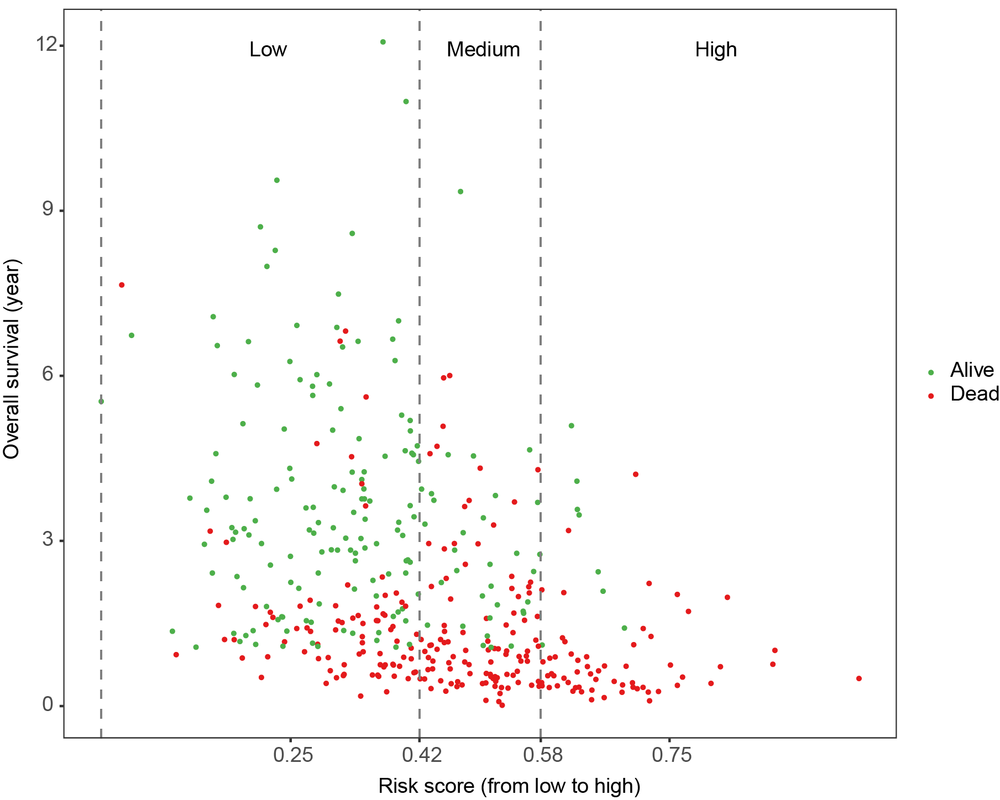
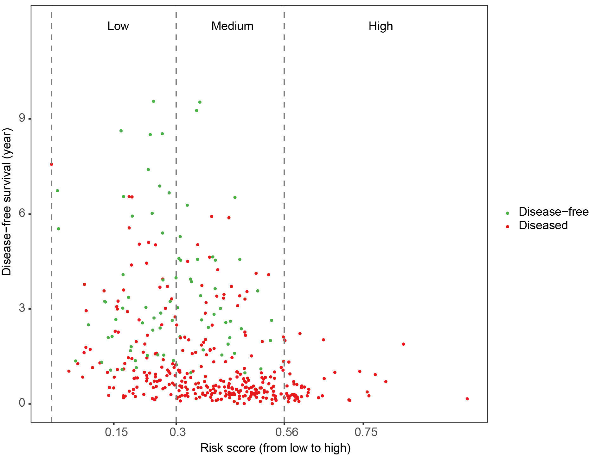

iCCA Patient Data Input
Note: Input raw clinical values → TyG/SII calculated automatically by system
OS = Overall Survival | DFS = Disease-Free Survival
Prediction Results (SSVM Model)
Explainable ML for iCCA Curative Resection | C-index: OS=0.754, DFS=0.709
Awaiting Patient Clinical Data
Fill in the iCCA patient clinical values and submit to generate death and recurrence risk
Analyzing iCCA Patient Data
Calculating TyG/SII → Running SSVM Model → Generating Prognosis... (3-5s)
Prediction Calculation Error
Please check all inputs (non-negative values, 0/1 for binary variables, 1-3 for differentiation grade) and try again.
Overall Survival (OS)
Disease-Free Survival (DFS)
Risk Score vs Survival Distribution For Reference
OS Scatter Plot

DFS Scatter Plot

Note: Green=Alive, Red=Dead/Recurrence; Vertical dashed lines indicate optimal risk cutoff (Low/Medium/High).
Model Interpretation & Clinical Suggestion
These risk stratifications and survival estimates are predicted by the SSVM_OS (11 variables) and SSVM_DFS (9 variables) explainable machine learning models for intrahepatic cholangiocarcinoma (iCCA) patients after curative resection.
Risk scores are standardized using training set reference values (0-1 range), and risk groups are defined by X-tile optimal cutoffs.
Clinical Note: This prediction is an adjunct to clinical judgment, not a definitive prognosis.
Treatment decisions should combine with clinical symptoms, imaging and pathological results.